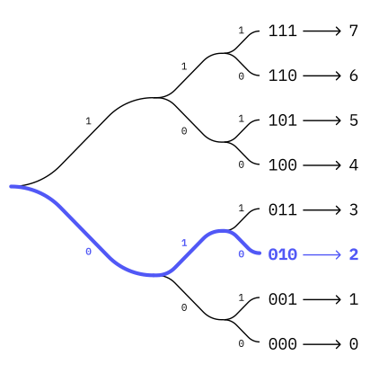

To first understand how digital data is stored and how DNA works, we need to understand code.
Code is a system of words, letters, figures, or symbols used to represent others, especially for the purposes of secrecy. — Oxford Languages
What does this mean? Code basically is anything that needs to be known by the spectator so it can be understood. A language for example is a form of code. One needs to know the language to be able to understand it. Let's take french for example. This language is based on the Latin alphabet. So first of all one needs to understand the little pictograms that make up a letter. It takes us humans a while to understand what each letter stands for. So to understand that an A is an "A", we first need to understand this code—the key. Understanding that, we then are able to take chains of these characters to form words, then sentences, then paragraphs and texts. But we also need to understand grammar and vocabulary to understand the language. And this is only one language! The Chinese alphabet looks completely different and we need to start understanding the characters again.
Ok, this has been a quite elaborate example of code. Let's take a couple of steps back. Let's think of a form of code that only requires two values. On or off. A classic example for this one would be a traffic light. Green means go, while red means stop. A simple code that we learned early on to know when it's safe to cross a street.
Great! A simple code with only two values! But can we create even more complex information just using two values?
With five elements, one already can create a lot more things. For example one could create music. The game “The Legend of Zelda Ocarina of Time” and “The Legend of Zelda Majora's Mask"1 use a couple of songs made only with five notes. Try to play some of them!
By now you should have got an understanding of simple codes and what sequencing can do. Before we dig a little deeper into how data is stored on DNA, we first need to understand how digital data is stored on a computer.
You probably have heard of the term binary code already. So in the next section we try to understand the basic capabilities of this code.
Base of 10. The system we are used to. If we would split the numbers into a table, then each column would have a 0 more. So one column with all the 1s, one with the 10s, one with the 100s, and so on. Each cell can have 10 options. So—as we are used to—0, 1, 2, 3, 4, 5, 6, 7, 8, and 9. If the value goes above this limit, the next column counts one up. The table would look like this:
| 100 | 10 | 1 | Total |
|---|---|---|---|
| 0 | 0 | 4 | 4 |
| 2 | 3 | 1 | 231 |
Then we add the numbers in each column to get the result of a row. Reading the table above would look something like this: 200 + 30 + 1 = 231.
A number system of the base of 2 behaves similarly. But instead of having in each column times 10 the value, we multiply by the value 2. Hence the columns generate like this: 1, 2, 4, 8, 16, and so on. As we are on the base of 2, each cell can only have 2 options: 0 or 1. The table would look like this:
| 4 | 2 | 1 | Total |
|---|---|---|---|
| 0 | 0 | 1 | 1 |
| 0 | 1 | 0 | 2 |
| 0 | 1 | 1 | 3 |
Now we calculate in the same way, we add up the numbers of the table head times the amount of this number we need: 0 + 2 + 1 = 3.
Another way to think about counting in binary is to always start from the right and shift the digit one forward (to the left) if the value increases. If the shift up would hit a 1, then the number left to this increases and all the lower digits get set to 0 again.
This might sound confusing, but try it out yourself below. Try to increase the numbers slowly or play around if you can generate the numbers you want in binary!
Using eight of these bits, we have one byte. A byte can have up to 256 different combinations.
If one byte is one letter, these 8 binary values can display one of 256 letters if one is able to understand the code that each combination is assigned to. This is how text is stored on your computer.
Play around below to test what letter is using which code in your computer. Or the other way around!
Above have been two very straight forward examples. But just like languages, this can get infinitely complex. 1 s and 0s get stored to create letters and numbers, which get stored to generated sentences, etc. In the beginning the language is specified, this way the computer is able to understand if this is an image, a text document, or even something completely different!
Reversing this process means that everything on your computer is finally stored in 1s and 0s.
Think about a decision tree of only having two options at each time, that is infinitly long. It might need a lot of decisions, but eventually, you will arrive at the one you want to arrive at. In a very abstract way, this is how data is stored on your computer.
DNA is the building plan of life on Earth. It is this little strand that contains all the information that is needed to build plants 🪴, animals 🦆, and humans 🤸. But how does it do that?
Let's start with the components the DNA is built of: Nucleobases. There are five of those, so called, primary nucleobases. Four of them form the DNA strand: adenine (A), cytosine (C), guanine (G), and thymine (T). These four are put in a chain and store this way the instructions to build every cell of a living organism. Enzymes read the strand and translate it into RNA which then is used by Ribosomes to form proteins. **[read more here]**
But are just four bases sufficient to form every living cell that exists on Earth? Yes! Remember how digital data is stored using only 1 and 0? Our DNA behaves similarly, but storing data on the base of 4 instead of 2.
| Base | Value | Binary |
|---|---|---|
| A | 0 | 00 |
| C | 1 | 01 |
| G | 2 | 10 |
| T | 3 | 11 |
To make this a little more tangible, try writing a sentence below and see how the data would be stored in a DNA strand.